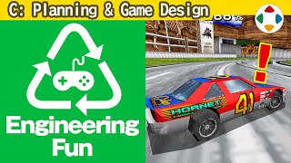
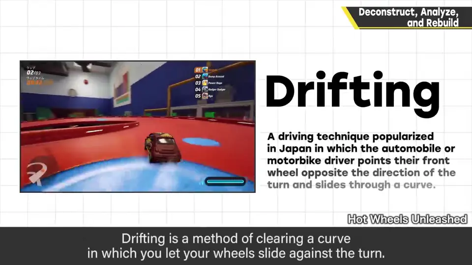
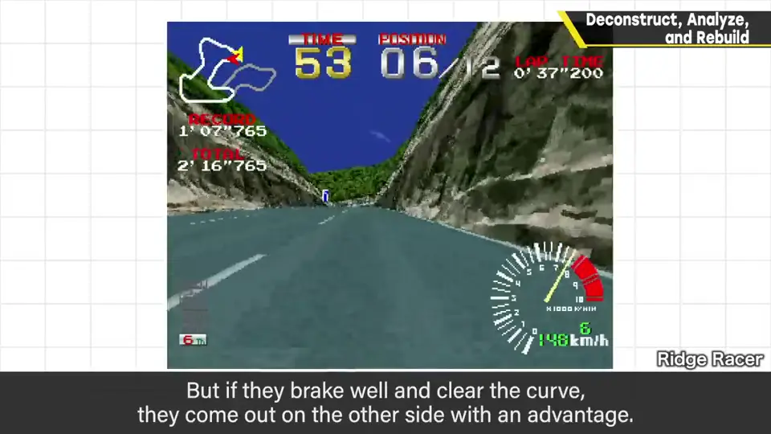
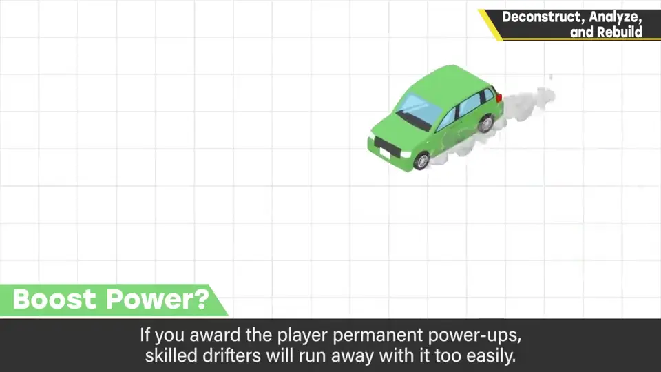
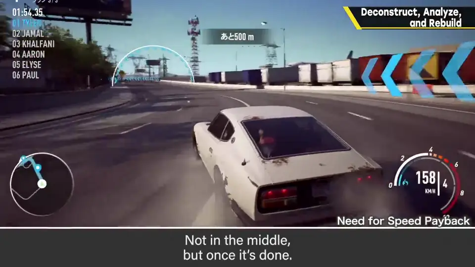
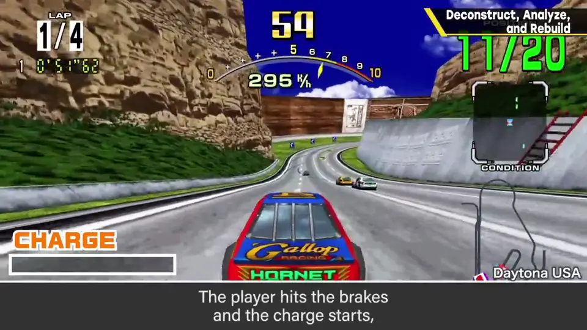
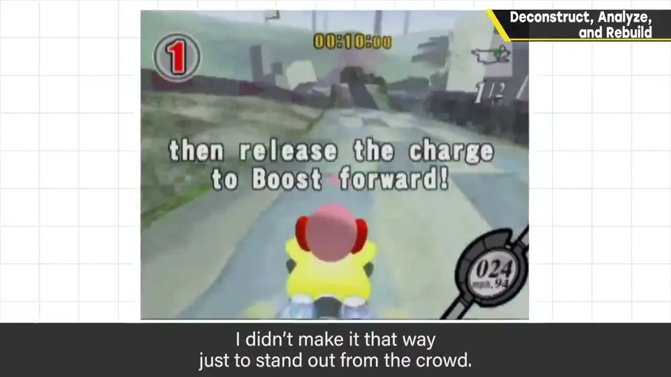

速览
深入理解事物非常重要。想让作品有原创性，单纯模仿有趣的东西是不够的：推荐把乐趣的要素分解，再以独特的构成重建——至少樱井是这样做的。例：做赛车游戏，写实赛车振幅小，所以设想夸张的风格。分解：赛车游戏哪里好玩？这里假设漂移好玩（漂移：转弯时让车轮打滑通过的驾驶法）。真车上抓地跑法明显更快，但作为游戏，让漂移更有趣是有效的。考察：为什么漂移让人觉得爽？因为也有风险与回报：失控、不能撞的墙在眼前展开，很危险；但靠控制顺利通过，就能以有利状态前进。那怎样让漂移在游戏中更好玩？漂移加分没什么好处；永久强化会让高手差距拉得太大；漂移提速倒也可以——至少要获得回报就必须提速；与其整个漂移都加速，不如漂移过弯完成时加速——不是过程中，而是结束时。再构建：把漂移和「蓄力」合为一体如何？刹车时开始蓄力，保持漂移，在弯道结束时一下释放就能加速——没错，这就是构思《卡比的空中滑翔》时的过程。一键就能玩的赛车游戏，并非单纯为了标新立异，而是经过分解、考察、再构建的阶段想出来的。樱井的爱好是开车——不是游戏——但并不是从中得到灵感，而是觉得作为游戏好玩才立项。仔细探寻乐趣之源、组织并消化的点子都是必要的，但一步步组织就能理解：分解、组合，做出原创性。
1. 别只模仿：分解再重建 0:02
深入理解事物非常重要。想让作品有原创性，单纯模仿有趣的东西是不够的。推荐把乐趣的要素分解，再以独特的构成重建——至少樱井自己是这样做的。
哪里好玩？→ 漂移"] --> B["考察
为什么好玩？→ 风险与回报"] B --> C["再构建
刹车蓄力 + 过弯释放加速"] C --> D["《卡比的空中滑翔》"]
2. 分解：赛车游戏哪里好玩？ 0:22
例如做赛车游戏：写实赛车振幅小，所以设想夸张的风格。先分解：赛车游戏中哪里好玩？这里假设漂移好玩。

真车上抓地跑法明显比漂移更快；但作为游戏想让它好玩，让漂移更有趣是有效的。
3. 考察：为什么漂移让人爽？ 1:03
因为那里也有风险与回报：失控、不能撞的墙就在眼前，很危险；但靠控制顺利通过，就能以有利状态往前。

那么作为游戏，怎样让漂移更好玩？
- 漂移加分：没什么好处；
- 永久性强化：高手与他人差距会拉得太大；
- 漂移提速：可以——至少要获得回报就必须提速。与其整个漂移都加速，不如漂移过弯完成时加速：不是过程中，而是结束时。


4. 再构建：刹车蓄力漂移 2:01
把漂移和「蓄力」合为一个动作如何？刹车时开始蓄力，就这样漂移，在弯道结束时一下释放，就能加速。
没错，这正是构思《卡比的空中滑翔》时的过程。一键就能玩的赛车游戏，并不是单纯为了标新立异，而是经过分解、考察、再构建的阶段想出来的。


樱井的爱好是开车（不是游戏），但他并不是从中得到灵感，而是觉得作为游戏好玩才这样立项。
自测题
1. 樱井推荐的发想三步骤是什么？
分解（乐趣的要素）→ 考察（为什么有趣）→ 再构建（以独特构成重建）。 0:14
2. 为什么樱井选择在「漂移结束时」加速，而不是给分或永久强化？
加分没多大好处；永久强化会拉大高手与他人的差距；整个漂移都加速不如在过弯完成时给回报。 1:33
3. 《卡比的空中滑翔》的漂移系统是怎样的？
刹车时开始蓄力、保持漂移，在弯道结束时释放蓄力加速——一键即可游玩。 2:01